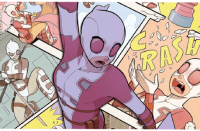
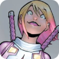

Gwenpool: A heroína fora da realidade
Introdução Informativa:

Gwenpool, cujo nome verdadeiro é Gwendolyn Poole, é uma personagem dos quadrinhos da Marvel, criada por Christopher Hastings e ilustrada por Gurihiru. Ela apareceu pela primeira vez em Howard the Duck #1 (2015), mas ganhou sua própria série em The Unbelievable Gwenpool (2016).
Origem da Gwenpool:
Diferente de outros personagens da Marvel, Gwenpool não vem de um universo fictício dentro dos quadrinhos, mas do mundo real. Gwendolyn Poole era uma garota comum e fã obsessiva de quadrinhos no "nosso" mundo. Certo dia, ela foi magicamente transportada para o universo Marvel e, ao perceber que estava dentro do mundo que conhecia tão bem, decidiu se tornar uma super-heroína.

Ao contrário de Deadpool, com quem frequentemente é comparada, Gwenpool não tem fator de cura ou habilidades de combate aprimoradas. No entanto, ela possui um poder muito peculiar: a consciência total de que está dentro de uma história em quadrinhos. Isso permite que ela quebre a quarta parede de formas criativas, como manipular painéis, diálogos e a própria narrativa, o que lhe dá uma vantagem única em lutas e situações.
Personalidade e Motivação:
Gwenpool é excêntrica, irreverente e caótica. Inicialmente, ela vê o mundo dos quadrinhos como uma grande diversão, sem se preocupar com as consequências de suas ações, já que acredita que tudo é ficção. Com o tempo, ela percebe que, mesmo sendo uma história em quadrinhos, as pessoas ao seu redor têm sentimentos e que suas ações podem ter um impacto real.
Histórias Notáveis:
Nesta série, Gwenpool tenta encontrar seu lugar no universo Marvel. Ela trabalha como mercenária, enfrenta vilões, interage com heróis e, ao longo do tempo, aprende a lidar com a responsabilidade de ser uma "personagem de quadrinhos".
Nesta minissérie, Gwen tenta garantir sua própria popularidade para não ser esquecida pelos leitores e, assim, apagada da existência.
Curiosidades:
Apesar do nome, Gwenpool não tem nenhuma relação com Gwen Stacy ou Deadpool, embora o visual do traje tenha sido inspirado pelo segundo.

A personagem é uma sátira das tendências modernas dos quadrinhos, com muitas referências à cultura pop e ao fandom.